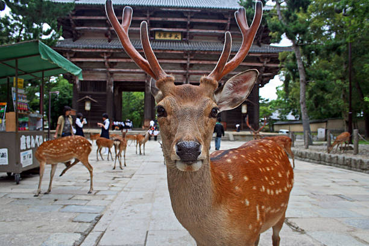
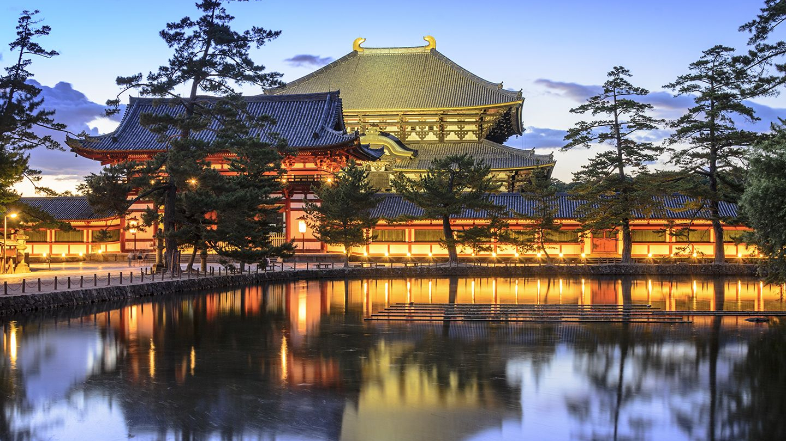
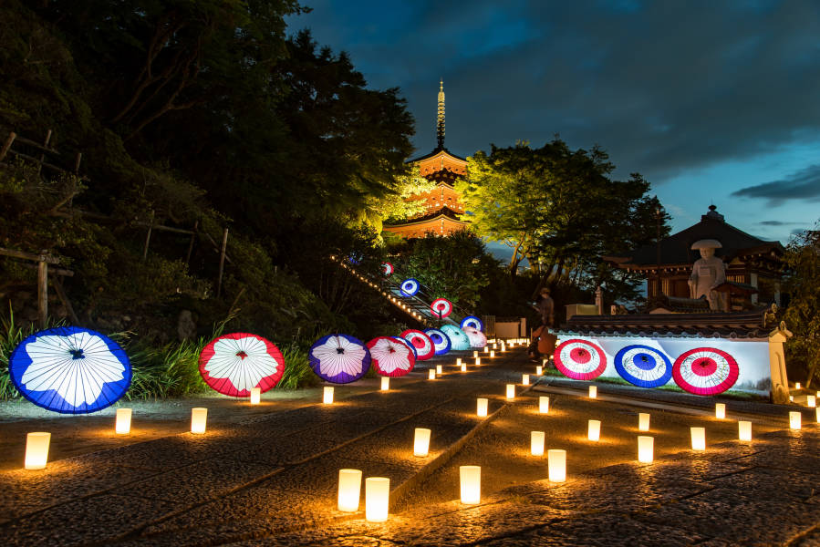
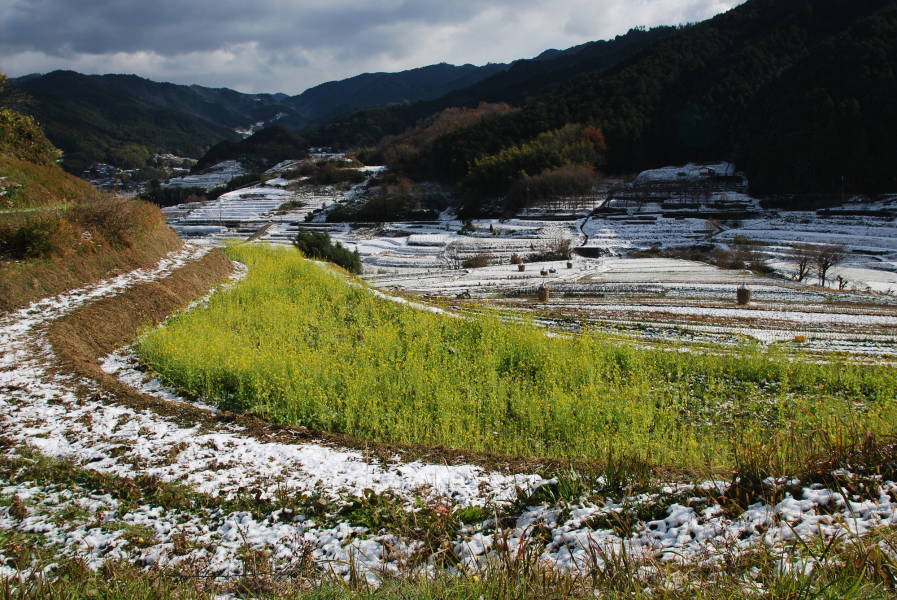

Nara é uma cidade histórica conhecida por seu rico patrimônio cultural e por ter sido a primeira capital permanente do Japão. A cidade abriga marcos icônicos como o Todai-ji, que possui a colossal estátua do Grande Buda, e o Kasuga Taisha, famoso por suas milhares de lanternas de pedra e bronze. O Parque de Nara é um destaque, onde cervos sagrados vagam livremente. Além dos templos, Nara oferece belos jardins como Isuien e Yoshikien, e uma rica coleção de arte budista no Nara National Museum. Com ruas como Sanjo Dori e Higashimuki Shopping Street, repletas de lojas e restaurantes tradicionais, Nara combina história, cultura e natureza de maneira única.
 Asuka, situada na província de Nara, é uma charmosa vila histórica conhecida como o berço da civilização japonesa. Famosa por seus sítios arqueológicos e templos antigos, Asuka abriga marcos icônicos como o Asuka-dera, o primeiro templo budista do Japão, e o Túmulo Ishibutai, uma imponente tumba de pedra. A região oferece paisagens pitorescas, ideais para caminhadas e cicloturismo, com destaque para os belos terraços de arroz de Inabuchi. Os visitantes também podem explorar a rica história local no Asuka Historical Museum e desfrutar da culinária tradicional em restaurantes típicos. Com sua combinação de história, cultura e natureza, Asuka é um destino fascinante para os interessados na antiga história japonesa.
 